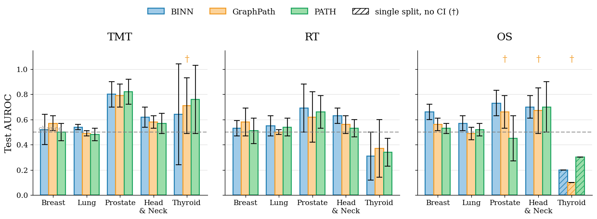
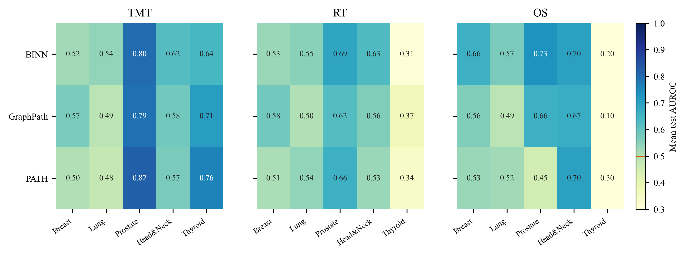
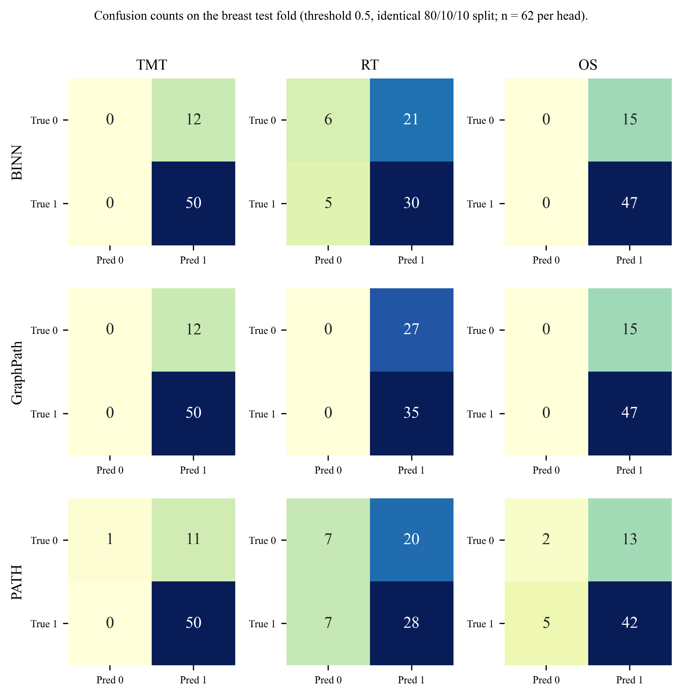
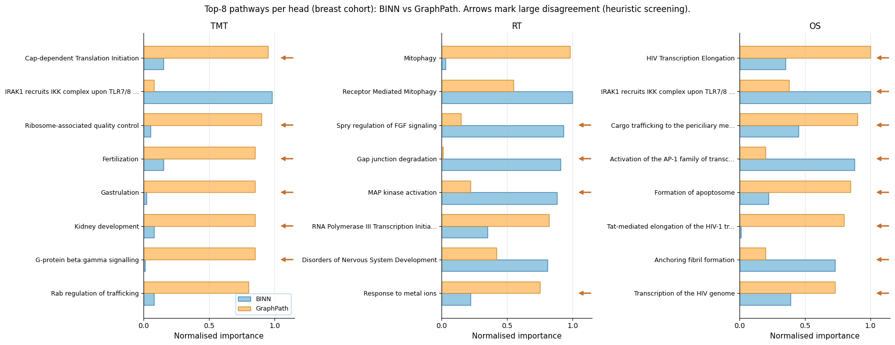

TRAPS: Treatment-Assignment Prediction via Pathway-informed Stratification
Abstract
Cancer treatment planning requires decisions across multiple clinical dimensions at once. Clinicians must determine whether a patient should receive targeted molecular therapy, radiation therapy, and whether they are likely to survive beyond six months. Existing pathway-informed deep learning models have been developed and tested in isolation, so it is unclear how they compare on a common footing. We present a harmonized benchmark for pathway-guided prediction of treatment assignment and short-term survival, evaluating three biologically informed architectures — BINN, GraphPath, and PATH — across five cancer cohorts drawn from The Cancer Genome Atlas, representing 2,622 patients encoded using Reactome pathway activity scores. We emphasise that the labels reflect the treatment a patient was recorded as receiving in TCGA, i.e. treatment exposure, rather than a measured response to therapy. Each model is trained jointly on all three clinical outcomes over a shared Reactome pathway representation, with each architecture retaining its original reference training protocol; to our knowledge this is the first study to treat pathway-structured deep learning as a combined treatment-assignment and short-term survival prediction problem. Our results show that, once every architecture is evaluated on identical stratified folds with matched uncertainty quantification (five repeated splits and paired-bootstrap tests), most inter-model differences fall within their 95% confidence intervals: the architecture rankings reported when these models are studied in isolation are largely not statistically resolved. The one consistent and significant effect is that the sparse-hierarchy model BINN is the strongest survival (OS) predictor, significantly outperforming both graph models on breast-cancer OS (ΔAUROC up to 0.14, p ≤ 0.01) and leading on lung and prostate OS. For treatment-assignment prediction, targeted molecular therapy is best discriminated in the prostate cohort (AUROC ≈ 0.80 for all three models), yet no architecture significantly outperforms the others on any TMT cohort; radiation-therapy assignment is weakly predicted throughout, consistent with the hypothesis that its drivers are largely clinical rather than transcriptomic. Under a fair unified protocol, then, the choice among pathway-informed architectures matters far less than prior isolated results suggest, with short-term survival prediction the clearest point of differentiation.
Why a harmonized benchmark?
Pathway-informed models have each been shown to work — but never against each other. P-NET, BINN, GraphPath, and PATH were developed and evaluated under different datasets, labels, input features, and endpoints. So it is genuinely unknown whether one architecture is generally better, or whether each simply happens to suit the setting it was published in.
TRAPS removes that confound. Every model sees the same patients, the same Reactome/ssGSEA representation, the same multi-label objective, and — at each of five seeds — byte-identical 80/10/10 stratified folds. Every reported gap then carries a 95% confidence interval and a paired-bootstrap test. The question stops being "which model scored highest?" and becomes "which differences survive repeated evaluation?"
One honest caveat, stated in the paper and repeated here: each architecture keeps its original reference training protocol, including its optimiser, hyperparameters, and — for PATH — its own gene-membership pathway filter. The benchmark is harmonized at the level of data, representation, and evaluation splits, not a fully controlled head-to-head comparison.
Contributions
- A harmonized TCGA benchmark — pathway-based prediction of TMT, RT, and OS ≥ 6 m across five solid-tumour cohorts, sharing a common input representation and learning objective across architectures.
- One representation for every patient — the same Reactome and ssGSEA-based pathway encoding, making the input space consistent across cohorts and models.
- Three pathway-informed architectures, adapted and compared — BINN's sparse Reactome hierarchy, GraphPath's multi-head graph attention, and PATH's edge-aware graph transformer, each trained multi-task on all three heads.
- Performance is phenotype-specific — the strongest architecture changes depending on whether the target is therapy assignment or short-term survival, and most cross-model gaps do not survive paired bootstrapping at all.
Five cohorts, three heads, 2,622 patients
| Cancer type | n | TMT n (%) | RT n (%) | OS ≥ 6 m n (%) |
|---|---|---|---|---|
| Breast | 618 | 571 (92%) | 345 (56%) | 462 (75%) |
| Prostate | 496 | 54 (11%) | 61 (12%) | 480 (97%) |
| Head & Neck | 429 | 150 (35%) | 274 (64%) | 395 (92%) |
| Thyroid | 109 | 7 (6%) | 61 (56%) | 108 (99%) |
| Lung | 970 | 311 (32%) | 124 (13%) | 863 (89%) |
| Total | 2,622 | 1,093 (42%) | 865 (33%) | 2,308 (88%) |
Per-cohort sample counts and positive prevalence for each clinical head. Gene expression is aggregated into 1,706 curated Reactome pathways (10–1,000 genes each), scored per sample with ssGSEA and normalised to [0, 1]. TMT = targeted molecular therapy; RT = radiation therapy; OS = overall survival. Note the severe class imbalance in several cells — thyroid TMT rests on 7 positives, and thyroid OS on a single negative patient.
Main results: AUROC with confidence intervals
| Cohort | Head | BINN | GraphPath | PATH |
|---|---|---|---|---|
| Breast | TMT | 0.52 [0.40, 0.65] | 0.57 [0.52, 0.63] | 0.50 [0.43, 0.57] |
| RT | 0.53 [0.47, 0.59] | 0.58 [0.47, 0.69] | 0.51 [0.41, 0.62] | |
| OS | 0.66 [0.60, 0.72] | 0.56 [0.50, 0.61] | 0.53 [0.49, 0.58] | |
| Lung | TMT | 0.54 [0.53, 0.56] | 0.49 [0.47, 0.51] | 0.48 [0.43, 0.54] |
| RT | 0.55 [0.47, 0.63] | 0.50 [0.49, 0.52] | 0.54 [0.47, 0.61] | |
| OS | 0.57 [0.51, 0.62] | 0.49 [0.44, 0.55] | 0.52 [0.47, 0.58] | |
| Prostate | TMT | 0.80 [0.70, 0.90] | 0.79 [0.70, 0.88] | 0.82 [0.72, 0.92] |
| RT | 0.69 [0.50, 0.88] | 0.62 [0.42, 0.82] | 0.66 [0.53, 0.79] | |
| OS | 0.73 [0.63, 0.82] | 0.66 [0.53, 0.78] | 0.45 [0.27, 0.63] | |
| Head & Neck | TMT | 0.62 [0.55, 0.70] | 0.58 [0.53, 0.63] | 0.57 [0.49, 0.66] |
| RT | 0.63 [0.58, 0.69] | 0.56 [0.49, 0.63] | 0.53 [0.46, 0.60] | |
| OS | 0.70 [0.61, 0.78] | 0.67 [0.49, 0.86] | 0.70 [0.50, 0.91] | |
| Thyroid | TMT | 0.64 [0.24, 1.04] | 0.71 [0.50, 0.93] | 0.76 [0.48, 1.04] |
| RT | 0.31 [0.12, 0.51] | 0.37 [0.13, 0.60] | 0.34 [0.23, 0.45] | |
| OS† | 0.20 | 0.10 | 0.30 |
Held-out test AUROC (mean [95% CI] over five identical-split repeats). At a fixed repeat, all three models are evaluated on byte-identical 80/10/10 stratified folds. Bold marks the two cells where a paired-bootstrap test resolves the difference as significant: BINN over both graph models on breast OS (ΔAUROC 0.10, p = 0.010 vs. GraphPath; 0.14, p = 0.001 vs. PATH) and BINN over GraphPath on head & neck RT (ΔAUROC 0.06, p = 0.013); BINN also leads lung and prostate OS. †Thyroid OS is degenerate — the cohort contains a single OS-negative patient — and its estimates are flagged as underpowered rather than interpretable. Everywhere else, the confidence intervals overlap.
No architecture dominates

Test AUROC across cohorts and clinical heads, averaged over five identical-split repeats, with 95% CIs. Colours follow the colourblind-safe Okabe–Ito palette: BINN blue, GraphPath orange, PATH green; the dashed line marks chance (0.50). Hatched bars (†) are single-split or underpowered cells that lack a reliable CI. Three heads × five cohorts × three models makes the headline finding immediate: no single architecture dominates uniformly, and many head-to-head gaps have intervals that include zero.
The cohort matters more than the model

Mean test AUROC per (model, cohort) cell for each clinical head, on a perceptually uniform colourblind-safe sequential map; darker is higher and the colourbar marks chance (0.50). Every cell is annotated so colour is never the sole channel. Read across the rows rather than down them: on TMT, discrimination is driven overwhelmingly by which cohort — all three models reach AUROC ≈ 0.80 on prostate, the most targetable-driver-defined cohort, while collapsing toward chance on breast and lung. None of the inter-model TMT contrasts is significant in any cohort.
Where the errors actually are

Confusion-matrix counts on the breast test fold at the 0.5 threshold, computed on identical held-out folds for all three models. On the TMT head every model recovers essentially every positive case (FN = 0; TP = 50 of 50), so recall is saturated — pathway-level features do capture targetable molecular drivers. The difficulty lies entirely in the small negative subgroup: with only 12 TMT-negatives in the fold, BINN and GraphPath assign every patient to the positive class. High AUROC in an imbalanced cell is not the same as a clinically usable decision rule.
Do the models agree on the biology?

Normalised pathway importance for BINN (gradient × input attribution) and GraphPath (attention-derived importance) across the three clinical heads, breast cohort. PATH is absent because it produces no pathway-level importance scores. Arrows flag pathways differing by > 0.50 — a heuristic for manual review, not a significance threshold. The strongest convergent signal is ERK/MAPK Targets, ranked highly by both models across multiple cohorts and all three heads; RT additionally converges on Receptor-Mediated Mitophagy and VEGFR2-Mediated Vascular Permeability. That two fundamentally different attribution mechanisms agree is what makes the signal interesting — but these remain literature-supported hypotheses, not validated findings.
What survives repeated evaluation
Survival is where architecture matters. BINN is the most consistent OS predictor and the only model whose advantage is statistically resolved — plausibly because its multi-depth auxiliary supervision propagates loss through every layer of the Reactome hierarchy, reinforcing broad transcriptional survival signals distributed across pathway levels.
Therapy assignment is not. No architecture significantly outperforms the others on any TMT cohort. RT is weakly predicted throughout — consistent with, though not proof of, the hypothesis that radiation-assignment drivers are largely clinical rather than transcriptomic.
Single splits mislead. GraphPath's headline "0.92 prostate TMT" from isolated evaluation becomes 0.79 [0.70, 0.88] across five identical-fold repeats — statistically indistinguishable from BINN (0.80) and PATH (0.82). Likewise, a perfect thyroid OS-F1 does not survive repeated evaluation. These are exactly the split-dependent artefacts a repeated-split protocol is built to expose.
The contribution here is less any single winner than the protocol: a shared data, preprocessing, training, and evaluation setup under which pathway-based models can be compared on equal terms, with confidence intervals and paired-bootstrap tests deciding which differences are real.
Limitations
- Exposure, not response. Labels record the treatment a patient was documented as receiving in TCGA, not a measured response to therapy. Validation on true response endpoints is still needed.
- Thin cells. Thyroid TMT rests on 7 positives; prostate and thyroid OS are severely imbalanced. Uncertainty stays substantial despite repeated stratified splits and paired bootstrapping.
- Protocol scope. Repeated random splits rather than full k-fold cross-validation, and no external validation cohort.
- Fixed-horizon survival. OS is a binary 180-day outcome; censoring and time-to-event dynamics are not modelled.
- Unequal pathway coverage. PATH's gene-membership filter admits 1,431 of the 1,706 shared Reactome pathways, leaving out 275 with fewer than 15 genes — including 7 of the 23 pathways surfaced by the importance analysis. A shared minimum-gene threshold would standardise this.
BibTeX
Status: preprint available on arXiv; the manuscript is under review — not yet accepted or published.
@misc{banik2026traps,
title = {TRAPS: Therapeutic Response Analysis via Pathway-informed Stratification},
author = {Banik, Sujoy and Chakraborty, Sayantan and Das Toma, Boishakhi and
Ghafoor, Zainab and Bhattacharjee, Ushashi and Howlader, Koushik and
Roy, Tirtho},
year = {2026},
eprint = {2606.09898},
archivePrefix = {arXiv},
primaryClass = {cs.LG},
url = {https://arxiv.org/abs/2606.09898}
}Note: the arXiv v1 record is titled “Therapeutic Response Analysis…”, while the current manuscript is titled “Treatment-Assignment Prediction…”. The BibTeX above matches the arXiv record so the citation resolves; the two titles should be reconciled on the next arXiv revision.